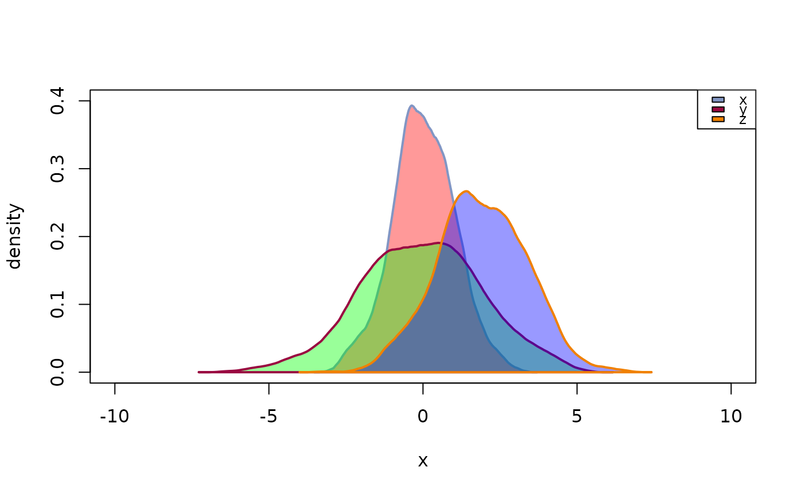
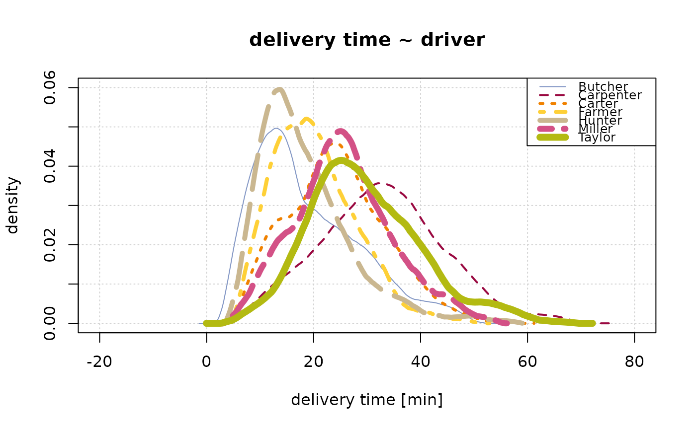

Plot Multiple Density Curves
PlotMultiDens.RdMultiple density curves are plotted on the same plot. The function plots the density curves in the defined colors and linetypes, after having calculated the globally appropriate xlim- and ylim-values. A legend can directly be included.
PlotMultiDens(x, ...) # S3 method for default PlotMultiDens(x, xlim = NULL, ylim = NULL, col = Pal(), lty = "solid", lwd = 2, fill = NA, xlab = "x", ylab = "density", args.dens = NULL, args.legend = NULL, na.rm = FALSE, flipxy = FALSE, ...) # S3 method for formula PlotMultiDens(formula, data, subset, na.action, ...)
Arguments
| x | a list of vectors whose densities are to be plotted. Use |
|---|---|
| xlim, ylim | xlim, ylim of the plot. |
| col | colors of the lines, defaults to |
| lty | line type of the lines. |
| lwd | line widths for the lines. |
| fill | colors for fill the area under the density curve. If set to |
| xlab, ylab | a title for the x, resp. y axis. Defaults to |
| args.dens | list of additional arguments to be passed to the |
| args.legend | list of additional arguments to be passed to the |
| na.rm | should |
| flipxy | logical, should x- and y-axis be flipped? Defaults to |
| formula | a formula of the form |
| data | an optional matrix or data frame (or similar: see |
| subset | an optional vector specifying a subset of observations to be used. |
| na.action | a function which indicates what should happen when the data contain NAs. Defaults to |
| ... | the dots are passed to |
Details
All style arguments, density arguments and data list elements will be recycled if necessary.
The argument flipxy leads to exchanged x- and y-values. This option can be used to plot density curves with a vertical orientation for displaying marginal densities.
Value
data.frame with 3 columns, containing the bw, n and kernel parameters used for the list elements.
The number of rows correspond to the length of the list x.
Author
Andri Signorell <andri@signorell.net>
Note
Consider using:
library(lattice) densityplot( ~ delivery_min | driver, data=d.pizza)
as alternative when not all curves should be plotted in the same plot.
See also
Examples
x <- rnorm(1000,0,1) y <- rnorm(1000,0,2) z <- rnorm(1000,2,1.5) # the input of the following function MUST be a numeric list PlotMultiDens(list(x=x,y=y,z=z))PlotMultiDens( x=split(d.pizza$delivery_min, d.pizza$driver), na.rm=TRUE , main="delivery time ~ driver", xlab="delivery time [min]", ylab="density" , lwd=1:7, lty=1:7 , panel.first=grid())# this example demonstrates the definition of different line types and -colors # an is NOT thought as recommendation for good plotting practice... :-) # the formula interface PlotMultiDens(delivery_min ~ driver, data=d.pizza)# recyling of the density parameters res <- PlotMultiDens(x=split(d.pizza$temperature, d.pizza$driver), args.dens = list(bw=c(5,2), kernel=c("rect","epanechnikov")), na.rm=TRUE)res#> $dens #> bw n kernel #> 1 5 96 rect #> 2 2 253 epanechnikov #> 3 5 226 rect #> 4 2 117 epanechnikov #> 5 5 156 rect #> 6 2 121 epanechnikov #> 7 5 197 rect #> #> $xlim #> [1] 0 80 #> #> $ylim #> [1] 0.00 0.08 #># compare bandwidths PlotMultiDens(x=split(d.pizza$temperature, d.pizza$driver)[1], args.dens = list(bw=c(1:5)), na.rm=TRUE, args.legend=NA, main="Compare bw")